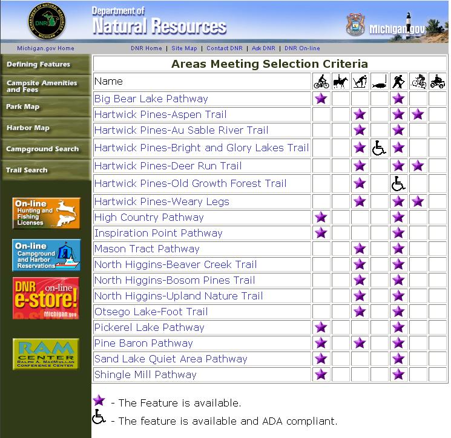

Beyond the river
Trail Maps
Dirt bike, hiking, mountain biking, cross-country skiing and more — check out these links to local maps and info.
Dirtbikes and ATVs
Snowmobile
Also, the area's best snowmobile parts, info, hangin' out and snow condition reports: The Sledheads website.
Hiking, bicycling, mountain biking, cross-country skiing, etc.
- DNR activities search — select Otsego, Kalkaska and Crawford counties, then select all activities of interest and click search.
DNR trail search results

Back to the Map to Whispering Pines · Prices page · Availability page · Canoe Liveries · WPR history page.
For reservations call us at (989) 348-2044 or e-mail us at info@whisperingresort.com.